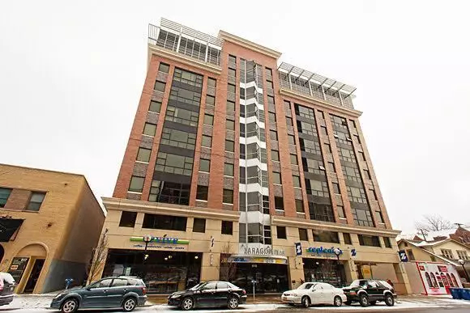
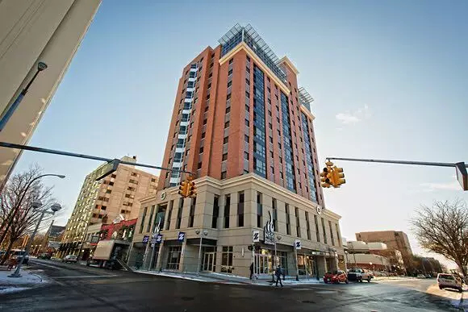
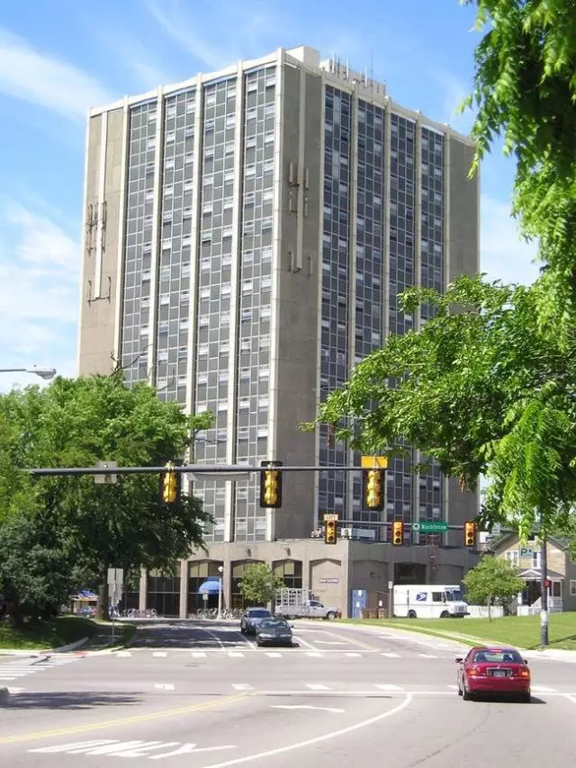
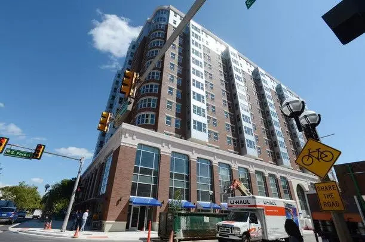
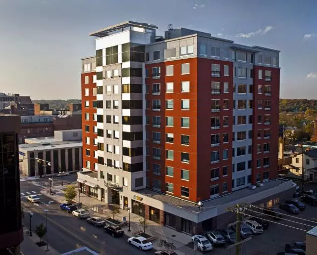
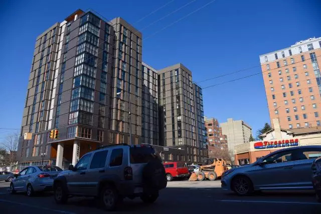
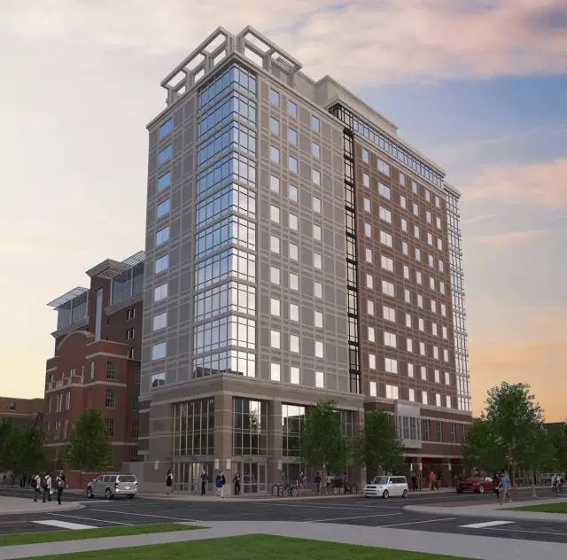
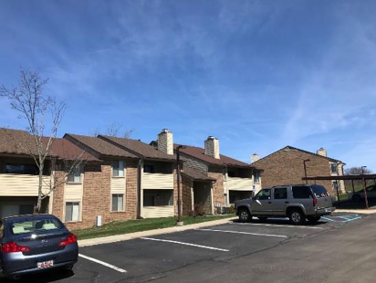
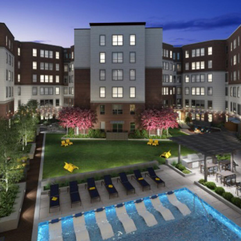

01. Zaragon Place
地址：619 East University Avenue
主要房型：
2 Bedrooms 1 Bathroom $1475-$1650
4 Bedrooms 2 Bathrooms $1195-$1450
6 Bedrooms 3 Bathrooms $1425
优点：环境舒适，高层可观赏城区景色，位于南校商业区核心，靠近中校教学楼。
缺点：房价偏贵。
网址：http://www.zaragonplace.com
推荐指数：四颗星
（图片来源：http://collegestudentapartments.com）
02. Zaragon West
地址：401 Thompson
主要房型：
1 Bedroom 1 Bathroom $2000-$2050
2 Bedrooms 2 Bathrooms $1300-$1450
4 Bedrooms 3 Bathrooms $1200
优点：环境舒适，高层可观赏城区景色，靠近中校商业街区，部分房型允许一个卧室住两个人，可以分担房价。
缺点：房价偏贵。
推荐指数：四颗星
（图片来源：http://www.secondwavemedia.com）
03. University Towers
地址：536 S. Forest Ave.
主要房型：
1 Bedroom 1 Bathroom $1779-$1809
2 Bedrooms 1 Bathroom $1099-$1205
3 Bedrooms 1 Bathroom $950
优点：位于南校商业区核心，房型多样。
缺点：设施比较旧，内部环境较差。
推荐指数：三颗星
（图片来源：https://www.apartments.com）
04. Landmark
地址：1300 South University Avenue
主要房型：
1 Bedroom 1 Bathroom $1979-$2079
2 Bedrooms 1 Bathroom $1369-$1469
3 Bedrooms 2 Bathrooms $1444
4 Bedrooms 2 Bathrooms $1074-$1534
4 Bedrooms 3 Bathrooms $1239-$1374
5 Bedrooms 3 Bathrooms $1239-$1339
5 Bedrooms 4 Bathrooms $1339-$1609
6 Bedrooms 3 Bathrooms $1199
6 Bedrooms 4 Bathrooms $1269-$1369
优点：位于南校商业区核心，房型多样，环境舒适，房间大。
缺点：价格偏高，到周末周围会比较吵闹，不适合喜欢安静的人居住。
网址：https://www.americancampus.com/student-apartments/mi/ann-arbor/landmark
推荐指数：四颗星
（图片来源：http://www.annarbor.com）
05. Sterling 411 Lofts
地址：411 E. Washington St.
主要房型：
1 Bedroom 1 Bathroom $1999
2 Bedrooms 1 Bathroom $1299
3 Bedrooms 2 Bathrooms $999
4 Bedrooms 2 Bathrooms $1009
4 Bedrooms 3 Bathrooms $819
优点：靠近中校商业区，价格在高端公寓中性价比高，房租包括所有水电费，免停车费。
缺点：周围没有 Blue Bus 车站。
网址：http://www.4elevenlofts.com/
推荐指数：四星半
（图片来源：https://offcampushousing.umich.edu）
06. Tower Plaza
地址：619 East University Avenue
主要房型：
1 Bedroom 1 Bathroom 需致电询问
2 Bedrooms 1 Bathroom 需致电询问
优点：靠近中校商业区，楼层高，房间宽敞，物业管理好。
缺点：设施比较旧，但不影响美观和使用，价格贵。
网址：http://www.towerplaza.net/index.html
推荐指数：四颗星
（图片来源：https://en.m.wikipedia.org）
07. Varsity
地址：425 E Washington St.
主要房型：
1 Bedroom 1 Bathroom $1940-$1965
2 Bedrooms 2 Bathrooms $1290
4 Bedrooms 2 Bathrooms $1184
4 Bedrooms 4 Bathrooms $1245
优点：靠近中校商业区，楼层高，房型多样。
缺点：价格偏高，周围没有 Blue Bus 车站。
网址：http://www.varsityannarbor.com/
推荐指数：四颗星
（图片来源：http://www.annarbor.com）
08. Foundry Lofts
地址：413 E. Huron St.
主要房型：
1 Bedroom 1 Bathroom $1182-$2250
2 Bedrooms 2 Bathrooms $1375-$1549
3 Bedrooms 3 Bathrooms $1299-$1325
4 Bedrooms 4 Bathrooms $1169-$1449
优点：公寓设施很新。公共设施完善，每个公寓有自己的洗衣机和烘干机。还有一些特殊豪华房型。
缺点：离中校稍远，周围没有公交车站。
网址：https://www.foundryloftsannarbor.com/
推荐指数：四颗星
（图片来源：http://www.mlive.com）
09. Sterling Arbor Blu
地址：624 Church St.
主要房型：
1 Bedroom 1 Bathroom $2015-$2173
2 Bedrooms 2 Bathrooms $1079-$1630
3 Bedrooms 2 Bathrooms $1480
3 Bedrooms 3 Bathrooms $1450
5 Bedrooms 4 Bathrooms $1445
优点：公寓设施新，公共设施完善，房型多样。靠近中校教学楼。
缺点：价格偏高。
网址：http://www.sterlinghousing.com/ann-arbor-mi/sterling-arbor-blu/
推荐指数：四颗星
（图片来源：http://www.sterlinghousing.com）
10. The Hub
地址：306 South State Street
主要房型：
1 Bedroom 1 Bathroom $1929-$1979
2 Bedrooms 1 Bathrooms $1329-$1379
2 Bedroom 2 Bathroom $1399-$1474
3 Bedroom 3 Bathroom $1299-$1414
4 Bedrooms 2 Bathrooms $1089-$1259
4 Bedrooms 4 Bathrooms $1319-$1354
优点：今年新建好的公寓且设施齐全。公共设施完善, 每个公寓有自己的洗衣机和烘干机。靠近中校商业区，Foundry Lofts
缺点：价格偏高。
网址：https://www.americancampus.com/student-apartments/mi/ann-arbor/hub-ann-arbor#specials
推荐指数：四颗星
（图片来源：http://www.americancampus.com）
11. The Yard
地址：615 South Main Street
主要房型：
1 Bedrooms 1 Bathrooms $1899
2 Bedrooms 2 Bathrooms $1169-$1189
2 Bedroom 3 Bathroom $1899
3 Bedroom 3 Bathroom $1099-$1225
4 Bedrooms 4 Bathrooms $999-$1114
优点：公寓设施很新且齐全，每个公寓有独立阳台，洗衣机和烘干机 , 环境优美，视野开阔。
缺点：离中校稍远，在 Main Street, 但周围有Shuttle
推荐指数：四颗星

（图片来源：http://www.livetheyard.com）
12. Six11
地址：611 East University Avenue
主要房型：
4 Bedrooms 4 Bathrooms $1250-$1299
5 Bedrooms 5 Bathrooms $1080-$1130
6 Bedrooms 6 Bathrooms $1549
优点：今年新建好的公寓，设施齐全，距离中校最近，最方便，每个公寓有独立阳台，洗衣机和烘干机。
缺点：房型选择较少
推荐指数：四颗星
（图片来源：http://www.livesix11.com）